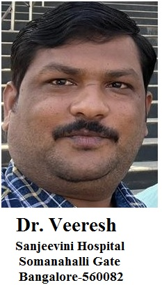
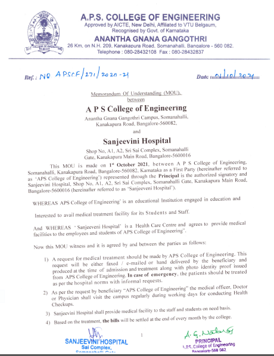
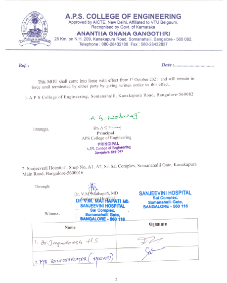

Dr. Veeresh, Sanjeevini Hospital, Somanahalli Gate, Bangalore-560082.
Sanjeevini Hospital Provide Medical Facility to the Staff and Students on need basis.
As per the request of college the Doctor visit the campus regularly during working days for conducting Health Checkups.
A request for medical treatment should be made by the college. The request will be either faxed/e-mailed or hand
delivered by the beneficiary and produced at the time of admission & treatment along with photo identity proof issued from college. In Case of Emergency, the patients should be treated as per the hospital norms with informal requests.
Based on the treatment, the bills will be settled at the end of every month by the college.


.
Counselor Profile
Student Counselor Responsibilities:

The College Canteen provides healthy and wholesome food to the students at a very affordable cost. The canteen has a varied menu that makes anybody hungry. The food prepared is hygienic and safe.
The canteen caters to the needs of both students and the faculty alike. Innovative food items are prepared and served. Ice creams and cold drinks are also available for the children at heart. Fresh fruit juices are also prepared for the fitness lovers.